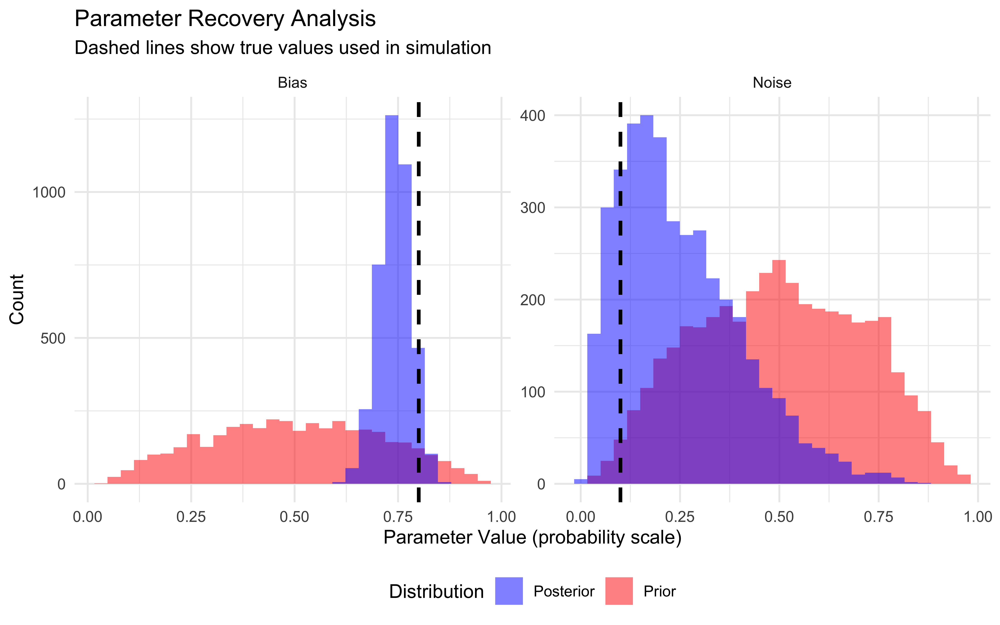
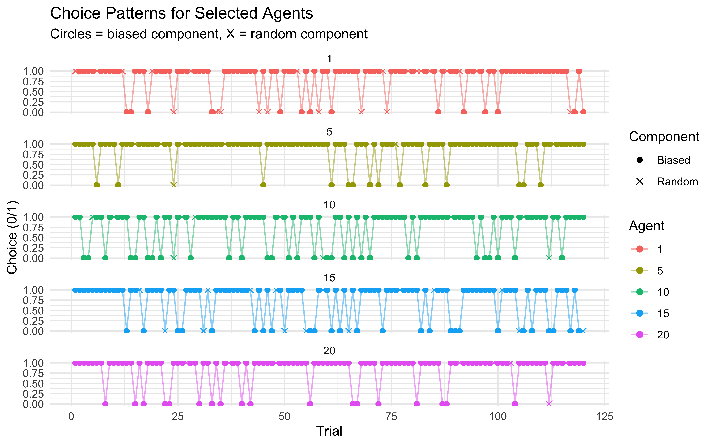

Chapter 9 Mixture models
When we model human cognition and behavior, we often find ourselves facing a puzzling reality: people don’t always follow a single, consistent strategy. Consider a person playing our matching pennies game - sometimes they might carefully track their opponent’s patterns, other times they might rely on a simple bias toward choosing “heads,†and occasionally they might respond completely randomly when their attention lapses. Traditional cognitive models that assume a single process are ill-equipped to capture this complexity.
Mixture models provide an elegant solution to this challenge. Rather than assuming behavior reflects just one cognitive process, mixture models allow us to combine multiple different processes within a unified modeling framework.
In the previous chapter, we explored model comparison techniques that help us select between competing cognitive models. Mixture models approach in a sense reframe that very problem - instead of asking “which model is correct?”, they allow us to ask “how much does each model contribute?†This shift acknowledges the possibility that multiple cognitive processes might coexist, either within a single individual or across a population.
9.0.1 Learning Objectives
After completing this chapter, you will be able to:
Understand how mixture models combine multiple cognitive processes
Implement mixture models for different types of behavioral data using Stan
Estimate mixture weights and component-specific parameters
Evaluate mixture models through posterior predictive checks
Compare mixture models to single-process alternatives
9.0.2 Chapter Roadmap
In this chapter, we will:
Examine reaction time data to visualize how mixture distributions appear in practice
Develop a theoretical foundation for mixture modeling
Implement a simple mixture model combining biased and random choice processes (thus going back to our matching pennies example)
Evaluate and validate this model through posterior checks
Extend to multilevel mixture models that capture individual differences
Compare mixture models with traditional single-process approaches
9.1 Visualizing Mixture Distributions: Reaction Time Example
Before diving into the mathematics and implementation of mixture models, let’s start with a concrete example that visually demonstrates why we need them. Reaction time (RT) data provides a particularly clear window into the mixture of cognitive processes.
In many cognitive tasks, participants are asked to respond as quickly as possible while still being accurate. However, attention fluctuates over time. Let’s simulate a scenario where participants sometimes engage in deliberate thinking (producing a log-normal distribution of RTs) and sometimes experience attentional lapses (producing more or less random responses with a uniform distribution of RTs).
# Flag to control whether to regenerate simulations
regenerate_simulations <- TRUE
# Load necessary packages
library(tidyverse)
library(here)
library(posterior)
library(cmdstanr)
library(bayesplot)
library(patchwork)
library(loo)
set.seed(123) # For reproducible results
# Number of observations
n_obs <- 500
# Parameters for the two processes
# Process 1: Deliberate thinking (log-normal distribution)
mu_delib <- 6.2 # Mean of log(RT) for deliberate process (≈ 500ms)
sigma_delib <- 0.2 # SD of log(RT) for deliberate process
# Process 2: Attentional lapses (uniform distribution)
min_lapse <- 200 # Minimum RT during attentional lapses (ms)
max_lapse <- 2000 # Maximum RT during attentional lapses (ms)
# Mixture weight (proportion of deliberate responses)
pi_delib <- 0.8 # 80% deliberate thinking, 20% attentional lapses
# Simulate the mixture
process <- rbinom(n_obs, 1, pi_delib) # 1 = deliberate, 0 = lapse
# Generate RTs from the appropriate distribution based on process
rt <- numeric(n_obs)
for (i in 1:n_obs) {
if (process[i] == 1) {
# Deliberate process - log-normal distribution
rt[i] <- rlnorm(1, mu_delib, sigma_delib)
} else {
# Attentional lapse - uniform distribution
rt[i] <- runif(1, min_lapse, max_lapse)
}
}
# Combine into a data frame
rt_data <- tibble(
observation = 1:n_obs,
rt = rt,
process = ifelse(process == 1, "Deliberate", "Attentional Lapse"),
log_rt = log(rt)
)
# Summary statistics by process
rt_summary <- rt_data %>%
group_by(process) %>%
summarize(
count = n(),
proportion = n()/n_obs,
mean_rt = mean(rt),
median_rt = median(rt),
sd_rt = sd(rt)
)
# Display summary
knitr::kable(rt_summary, digits = 2)| process | count | proportion | mean_rt | median_rt | sd_rt |
|---|---|---|---|---|---|
| Attentional Lapse | 94 | 0.19 | 1076.04 | 1106.17 | 552.71 |
| Deliberate | 406 | 0.81 | 494.98 | 490.17 | 92.08 |
Now, let’s visualize the reaction time distribution:
# Create histogram of reaction times with overlaid density curves
p1 <- ggplot() +
# Histogram of all data
geom_histogram(data = rt_data, aes(x = rt, y = ..density..),
bins = 30, fill = "gray80", color = "black", alpha = 0.5) +
# Density curves for each component
geom_density(data = rt_data %>% filter(process == "Deliberate"),
aes(x = rt, fill = "Deliberate Thinking"),
alpha = 0.4) +
# We can't use geom_density for uniform distribution (it would smooth it)
# Instead, overlay the theoretical uniform density
geom_segment(aes(x = min_lapse, xend = max_lapse,
y = 1/(max_lapse-min_lapse), yend = 1/(max_lapse-min_lapse),
color = "Attentional Lapse"),
linewidth = 1.5, alpha = 0.8) +
# Overall density
geom_density(data = rt_data, aes(x = rt), color = "black", linewidth = 1) +
# Aesthetics
scale_fill_manual(values = c("Deliberate Thinking" = "blue"),
name = "Process") +
scale_color_manual(values = c("Attentional Lapse" = "red"),
name = "Process") +
labs(title = "Reaction Time Distribution",
subtitle = "A mixture of deliberate thinking and attentional lapses",
x = "Reaction Time (ms)",
y = "Density") +
coord_cartesian(xlim = c(0, 2000)) +
theme_minimal() +
theme(legend.position = "top")
# Also plot the log RT
p2 <- ggplot() +
geom_histogram(data = rt_data, aes(x = log_rt, y = ..density..),
bins = 30, fill = "gray80", color = "black", alpha = 0.5) +
geom_density(data = rt_data %>% filter(process == "Deliberate"),
aes(x = log_rt, fill = "Deliberate Thinking"),
alpha = 0.4) +
geom_density(data = rt_data, aes(x = log_rt), color = "black", linewidth = 1) +
scale_fill_manual(values = c("Deliberate Thinking" = "blue"),
name = "Process") +
labs(title = "Log Reaction Time Distribution",
subtitle = "Log transformation highlights the mixture components",
x = "Log Reaction Time",
y = "Density") +
theme_minimal() +
theme(legend.position = "top")
# Display both plots
p1 / p2
In this example, we can clearly see how the overall reaction time distribution (black line) is a combination of two distinct processes:
Deliberate Thinking (Blue): A log-normal distribution centered around 500ms, representing focused cognitive processing of the task.
Attentional Lapses (Red Line): A uniform distribution spanning from very quick to very slow responses, representing trials where attention has drifted, leading to either impulsive responses or delayed responses due to mind-wandering.
The mixture of these processes creates a complex distribution with a prominent peak (from the deliberate process) and extended tails (from the attentional lapses). A standard single-process model assuming only a log-normal distribution would fail to capture these extended tails, leading to poor fit and potentially misleading conclusions about the cognitive processes involved.
This is exactly the situation where mixture models excel. They allow us to represent observed data as coming from a weighted combination of different underlying processes. Next, we’ll formalize this intuition and extend it to decision-making models.
9.2 Theoretical Foundation for Mixture Models
9.2.1 The Mixture Model Framework
At their core, mixture models represent data as coming from a weighted combination of different “component†distributions or processes. Mathematically, a mixture model can be expressed as:
p(y) = π_1p_1(y) + π_2p_2(y) + … + π_kp_k(y)
Where:
p(y) is the overall probability of observing data point y
p_j(y) is the probability of y according to component model j
π_j is the weight or mixing proportion of component j (with all π_j summing to 1)
Each component distribution p_j(y) can have its own parameters, and the mixing proportions π_j determine how much each component contributes to the overall model.
9.2.2 Mixture Models and Latent Variables
An alternative and often useful way to think about mixture models is through latent (unobserved) variables. We can introduce a latent categorical variable z that indicates which component generated each observation. For example, in a two-component mixture:
- z_i = 1 means observation i came from component 1
- z_i=2 means observation i came from component 2
We can then formulate the mixture model as:
p(y_i, z_i) = p(z_i)p(y_i∣z_i)
Where p(z_i=j)=π_j is the prior probability of component j, and p(y_i∣z_i = j) is the likelihood of y_i under component j.
This latent variable perspective is particularly useful for implementing mixture models in Bayesian frameworks like Stan.
9.2.3 Applications in Cognitive Modeling
In cognitive modeling, mixture models can represent several important phenomena:
Attentional fluctuations: As in our reaction time example, performance may reflect both focused engagement and attentional lapses
Strategy switching: Individuals might switch between different strategies over time
Dual-process theories: Behavior might arise from multiple cognitive systems (e.g., automatic vs. controlled)
Individual differences: Different individuals might use different strategies
Exploration vs. exploitation: Some decisions might reflect exploring new options while others exploit known rewards
9.3 Implementing a Basic Mixture Model
Now that we understand the theoretical foundation, let’s implement a simple mixture model for choice data. We’ll model behavior as a mixture of two processes:
- A biased process that chooses option 1, let’s say “right”, with some probability θ
- A random process that chooses randomly (50/50) between options 1 and 0, or “right†and “left”
This could represent, for example, a person who sometimes carefully performs a task but occasionally responds randomly due to attentional lapses.
9.3.1 Simulating Mixed Strategy Data
In previous chapters we generated data to use for fitting models. Let’s use that same data but focus on a particular agent who might be mixing strategies:
# Load data from a previous chapter
d <- read_csv("simdata/W3_randomnoise.csv")
# Choose data with some bias (0.8) and noise (0.1)
dd <- d %>% subset(rate == 0.8 & noise == 0.1)
# Prepare data for Stan
data <- list(
n = 120,
h = dd$choice
)
# Display summary statistics
mean_choice <- mean(dd$choice)
cat("Mean choice (proportion of 'right' choices):", mean_choice, "\n")## Mean choice (proportion of 'right' choices): 0.7666667Let’s visualize this data to see if we can detect patterns suggestive of a mixture:
# Calculate running proportion of right choices
running_prop <- cumsum(dd$choice) / seq_along(dd$choice)
# Plot actual choices over time
p1 <- ggplot(dd, aes(x = trial)) +
geom_point(aes(y = choice), alpha = 0.5) +
geom_hline(yintercept = 0.5, linetype = "dashed", color = "red") +
labs(title = "Sequence of Choices",
subtitle = "0 = left, 1 = right",
x = "Trial",
y = "Choice") +
theme_minimal()
# Plot running average
p2 <- ggplot(dd, aes(x = trial)) +
geom_line(aes(y = running_prop)) +
geom_hline(yintercept = 0.5, linetype = "dashed", color = "red") +
geom_hline(yintercept = 0.8, linetype = "dashed", color = "blue") +
labs(title = "Running Proportion of Right Choices",
subtitle = "Red: random choice (0.5), Blue: true bias (0.8)",
x = "Trial",
y = "Proportion Right") +
ylim(0, 1) +
theme_minimal()
p1 / p2For binary choice data, it’s harder to visually detect a mixture compared to reaction times. The overall proportion of right choices falls between what we’d expect from random choice (0.5) and fully biased choice with rate 0.8, which is consistent with a mixture of these processes.
9.3.2 Stan Implementation of a Mixture Model
Now let’s implement a Stan model that represents choices as coming from a mixture of a biased process and a random process:
stan_mixture_model <- "
// Mixture model for binary choice data
// Combines a biased choice process with a random choice process
data {
int<lower=1> n; // Number of trials
array[n] int h; // Choice data (0/1)
}
parameters {
real bias; // Bias parameter for biased process (logit scale)
real noise_logit; // Mixing weight for random process (logit scale)
}
model {
// Priors
target += normal_lpdf(bias | 0, 1); // Prior for bias parameter (centered at 0.5 in prob scale)
target += normal_lpdf(noise_logit | -1, 1); // Prior for noise proportion (favors lower noise)
// Mixture likelihood using log_sum_exp for numerical stability
target += log_sum_exp(
log(inv_logit(noise_logit)) + // Log probability of random process
bernoulli_logit_lpmf(h | 0), // Log likelihood under random process (p=0.5)
log1m(inv_logit(noise_logit)) + // Log probability of biased process
bernoulli_logit_lpmf(h | bias) // Log likelihood under biased process
);
}
generated quantities {
// Transform parameters to probability scale for easier interpretation
real<lower=0, upper=1> noise_p = inv_logit(noise_logit); // Proportion of random choices
real<lower=0, upper=1> bias_p = inv_logit(bias); // Bias toward right in biased choices
// Predicted distributions
vector[n] log_lik;
array[n] int pred_component; // Which component generated each prediction (1=random, 0=biased)
array[n] int pred_choice; // Predicted choices
// Calculate log likelihood for each observation (for model comparison)
for (i in 1:n) {
log_lik[i] = log_sum_exp(
log(noise_p) + bernoulli_logit_lpmf(h[i] | 0),
log1m(noise_p) + bernoulli_logit_lpmf(h[i] | bias)
);
}
// Generate posterior predictions
for (i in 1:n) {
// First determine which component to use
pred_component[i] = bernoulli_rng(noise_p);
// Then generate prediction from appropriate component
if (pred_component[i] == 1) {
// Random component
pred_choice[i] = bernoulli_rng(0.5);
} else {
// Biased component
pred_choice[i] = bernoulli_rng(bias_p);
}
}
}
"
# Write the Stan model to a file
write_stan_file(
stan_mixture_model,
dir = "stan/",
basename = "W8_MixtureSingle.stan"
)## [1] "/Users/au209589/Dropbox/Teaching/AdvancedCognitiveModeling23_book/stan/W8_MixtureSingle.stan"9.3.3 Fitting and Evaluating the Mixture Model
Now let’s fit the model and evaluate its performance:
# File path for saved model results
model_file <- "simmodels/W8_singlemixture.RDS"
# Check if we need to rerun the simulation
if (regenerate_simulations || !file.exists(model_file)) {
# Fit the model
samples <- mod_mixture$sample(
data = data,
seed = 123,
chains = 2,
parallel_chains = 2,
threads_per_chain = 1,
iter_warmup = 2000,
iter_sampling = 2000,
refresh = 500,
max_treedepth = 20,
adapt_delta = 0.99,
)
# Save the results
samples$save_object(file = model_file)
cat("Generated new model fit and saved to", model_file, "\n")
} else {
# Load existing results
samples <- readRDS(model_file)
cat("Loaded existing model fit from", model_file, "\n")
}## Running MCMC with 2 parallel chains, with 1 thread(s) per chain...
##
## Chain 1 Iteration: 1 / 4000 [ 0%] (Warmup)
## Chain 1 Iteration: 500 / 4000 [ 12%] (Warmup)
## Chain 1 Iteration: 1000 / 4000 [ 25%] (Warmup)
## Chain 1 Iteration: 1500 / 4000 [ 37%] (Warmup)
## Chain 1 Iteration: 2000 / 4000 [ 50%] (Warmup)
## Chain 1 Iteration: 2001 / 4000 [ 50%] (Sampling)
## Chain 1 Iteration: 2500 / 4000 [ 62%] (Sampling)
## Chain 1 Iteration: 3000 / 4000 [ 75%] (Sampling)
## Chain 2 Iteration: 1 / 4000 [ 0%] (Warmup)
## Chain 2 Iteration: 500 / 4000 [ 12%] (Warmup)
## Chain 2 Iteration: 1000 / 4000 [ 25%] (Warmup)
## Chain 2 Iteration: 1500 / 4000 [ 37%] (Warmup)
## Chain 2 Iteration: 2000 / 4000 [ 50%] (Warmup)
## Chain 2 Iteration: 2001 / 4000 [ 50%] (Sampling)
## Chain 1 Iteration: 3500 / 4000 [ 87%] (Sampling)
## Chain 1 Iteration: 4000 / 4000 [100%] (Sampling)
## Chain 2 Iteration: 2500 / 4000 [ 62%] (Sampling)
## Chain 2 Iteration: 3000 / 4000 [ 75%] (Sampling)
## Chain 1 finished in 0.3 seconds.
## Chain 2 Iteration: 3500 / 4000 [ 87%] (Sampling)
## Chain 2 Iteration: 4000 / 4000 [100%] (Sampling)
## Chain 2 finished in 0.3 seconds.
##
## Both chains finished successfully.
## Mean chain execution time: 0.3 seconds.
## Total execution time: 0.5 seconds.
##
## Generated new model fit and saved to simmodels/W8_singlemixture.RDS## # A tibble: 2 × 10
## variable mean median sd mad q5 q95 rhat ess_bulk ess_tail
## <chr> <dbl> <dbl> <dbl> <dbl> <dbl> <dbl> <dbl> <dbl> <dbl>
## 1 bias_p 0.756 0.758 0.0381 0.0392 0.692 0.816 1.00 2276. 2058.
## 2 noise_p 0.253 0.224 0.152 0.149 0.0608 0.549 1.00 2298. 1875.9.3.4 Model Diagnostics
Let’s check the model diagnostics to ensure our inference is reliable:
# Extract draws for diagnostics
draws <- as_draws_df(samples$draws())
# Check for convergence with trace plots
p1 <- mcmc_trace(draws, pars = c("bias_p", "noise_p")) +
ggtitle("Trace Plots for Mixture Model Parameters") +
theme_minimal()
# Examine parameter distributions
p2 <- mcmc_hist(draws, pars = c("bias_p", "noise_p")) +
ggtitle("Posterior Distributions") +
theme_minimal()
# Display diagnostics
p1
# Check for potential divergences
cat("Number of divergent transitions:", sum(draws$.divergent), "\n")## Number of divergent transitions: 09.3.5 Parameter Recovery Analysis
To verify that our model can accurately recover parameters, let’s examine how close our inferred parameters are to the true values used in the simulation:
# True parameters (from the simulation)
true_bias <- 0.8
true_noise <- 0.1
# Calculate parameter recovery metrics
bias_error <- mean(draws$bias_p) - true_bias
noise_error <- mean(draws$noise_p) - true_noise
cat("Parameter Recovery Results:\n")## Parameter Recovery Results:cat("Bias parameter - True:", true_bias, "Estimated:", round(mean(draws$bias_p), 3),
"Error:", round(bias_error, 3), "\n")## Bias parameter - True: 0.8 Estimated: 0.756 Error: -0.044cat("Noise parameter - True:", true_noise, "Estimated:", round(mean(draws$noise_p), 3),
"Error:", round(noise_error, 3), "\n")## Noise parameter - True: 0.1 Estimated: 0.253 Error: 0.153# Generate prior samples in probability space
set.seed(123)
n_samples <- nrow(draws)
prior_samples <- tibble(
bias_prior = inv_logit_scaled(rnorm(n_samples, 0, 1)),
noise_prior = inv_logit_scaled(rnorm(n_samples, 0, 1))
)
# Prepare data for plotting
recovery_data <- tibble(
parameter = rep(c("Bias", "Noise"), each = nrow(draws)),
posterior = c(draws$bias_p, draws$noise_p),
prior = c(prior_samples$bias_prior, prior_samples$noise_prior),
true_value = rep(c(true_bias, true_noise), each = nrow(draws)),
type = "Posterior"
)
prior_data <- tibble(
parameter = rep(c("Bias", "Noise"), each = nrow(prior_samples)),
value = c(prior_samples$bias_prior, prior_samples$noise_prior),
true_value = rep(c(true_bias, true_noise), each = nrow(prior_samples)),
type = "Prior"
)
# Visualize parameter recovery with priors
ggplot() +
# Add prior densities
geom_histogram(data = prior_data, aes(x = value, fill = type),
alpha = 0.5, bins = 30) +
# Add posterior densities
geom_histogram(data = recovery_data, aes(x = posterior, fill = type),
alpha = 0.5, bins = 30) +
# Add true values
geom_vline(data = recovery_data %>% distinct(parameter, true_value),
aes(xintercept = true_value),
linetype = "dashed", size = 1, color = "black") +
# Facet by parameter
facet_wrap(~parameter, scales = "free") +
# Formatting
scale_fill_manual(values = c("Posterior" = "blue", "Prior" = "red"),
name = "Distribution") +
labs(title = "Parameter Recovery Analysis",
subtitle = "Dashed lines show true values used in simulation",
x = "Parameter Value (probability scale)",
y = "Count") +
theme_minimal() +
theme(legend.position = "bottom")
The model has recovered the true parameters reasonably well, providing confidence in our approach. In a real project, we’d want to run this across a broad range of parameter values!
9.3.6 Posterior Predictive Checks
# Generate posterior and prior predictive samples
n_samples <- 100
# First, generate posterior predictive samples
post_pred_samples <- matrix(NA, nrow = n_samples, ncol = data$n)
post_component_samples <- matrix(NA, nrow = n_samples, ncol = data$n)
# Sample from posterior distributions
post_sample_indices <- sample(1:nrow(draws), n_samples, replace = TRUE)
for(i in 1:n_samples) {
idx <- post_sample_indices[i]
noise_p_sample <- draws$noise_p[idx]
bias_p_sample <- draws$bias_p[idx]
for(j in 1:data$n) {
# Determine component (0 = biased, 1 = random)
component <- rbinom(1, 1, noise_p_sample)
post_component_samples[i,j] <- component
if(component == 1) {
# Random component
post_pred_samples[i,j] <- rbinom(1, 1, 0.5)
} else {
# Biased component
post_pred_samples[i,j] <- rbinom(1, 1, bias_p_sample)
}
}
}
# Now, generate prior predictive samples in the same way
prior_pred_samples <- matrix(NA, nrow = n_samples, ncol = data$n)
prior_component_samples <- matrix(NA, nrow = n_samples, ncol = data$n)
# Generate samples from prior distributions
prior_noise_samples <- inv_logit_scaled(rnorm(n_samples, 0, 1))
prior_bias_samples <- inv_logit_scaled(rnorm(n_samples, 0, 1))
for(i in 1:n_samples) {
noise_p_prior <- prior_noise_samples[i]
bias_p_prior <- prior_bias_samples[i]
for(j in 1:data$n) {
# Determine component (0 = biased, 1 = random)
component <- rbinom(1, 1, noise_p_prior)
prior_component_samples[i,j] <- component
if(component == 1) {
# Random component
prior_pred_samples[i,j] <- rbinom(1, 1, 0.5)
} else {
# Biased component
prior_pred_samples[i,j] <- rbinom(1, 1, bias_p_prior)
}
}
}
# Calculate summary statistics from predictive samples
# For posterior
post_pred_means <- apply(post_pred_samples, 1, mean)
post_pred_run_lengths <- apply(post_pred_samples, 1, function(x) mean(rle(x)$lengths))
# For prior
prior_pred_means <- apply(prior_pred_samples, 1, mean)
prior_pred_run_lengths <- apply(prior_pred_samples, 1, function(x) mean(rle(x)$lengths))
# Calculate observed statistics
obs_mean <- mean(data$h)
obs_runs <- mean(rle(data$h)$lengths)
# Prepare data for visualization
pred_means_data <- tibble(
mean = c(post_pred_means, prior_pred_means),
type = factor(c(rep("Posterior", n_samples), rep("Prior", n_samples)),
levels = c("Prior", "Posterior"))
)
pred_runs_data <- tibble(
run_length = c(post_pred_run_lengths, prior_pred_run_lengths),
type = factor(c(rep("Posterior", n_samples), rep("Prior", n_samples)),
levels = c("Prior", "Posterior"))
)
# Visualize posterior and prior predictive checks
p1 <- ggplot() +
# Add prior predictive distribution
geom_histogram(data = pred_means_data %>% filter(type == "Prior"),
aes(x = mean, fill = type), bins = 30, alpha = 0.5) +
# Add posterior predictive distribution
geom_histogram(data = pred_means_data %>% filter(type == "Posterior"),
aes(x = mean, fill = type), bins = 30, alpha = 0.5) +
# Add observed statistic
geom_vline(xintercept = obs_mean, color = "black", size = 1, linetype = "dashed") +
scale_fill_manual(values = c("Prior" = "red", "Posterior" = "blue"),
name = "Distribution") +
labs(title = "Predictive Check: Mean",
subtitle = "Dashed line shows observed data value",
x = "Mean (proportion of right choices)",
y = "Count") +
theme_minimal()
p2 <- ggplot() +
# Add prior predictive distribution
geom_histogram(data = pred_runs_data %>% filter(type == "Prior"),
aes(x = run_length, fill = type), bins = 30, alpha = 0.5) +
# Add posterior predictive distribution
geom_histogram(data = pred_runs_data %>% filter(type == "Posterior"),
aes(x = run_length, fill = type), bins = 30, alpha = 0.5) +
# Add observed statistic
geom_vline(xintercept = obs_runs, color = "black", size = 1, linetype = "dashed") +
scale_fill_manual(values = c("Prior" = "red", "Posterior" = "blue"),
name = "Distribution") +
labs(title = "Predictive Check: Run Lengths",
subtitle = "Dashed line shows observed data value",
x = "Mean run length",
y = "Count") +
theme_minimal()
# Display the plots side by side with shared legend
p1 + p2 + plot_layout(guides = "collect") &
theme(legend.position = "bottom")
Our model appears to capture both the overall proportion of right choices and the distribution of run lengths in the observed data. This suggests the mixture model is adequately representing the data-generating process.
9.4 Parameter Interpretation
The mixture model provides valuable insights into the cognitive processes underlying the observed behavior:
Bias Parameter (θ): The bias parameter (estimated as approximately r round(mean(draws$bias_p), 2)) represents the probability of choosing the right option when the participant is following the biased process.
Noise Parameter (π): The noise parameter (estimated as approximately r round(mean(draws$noise_p), 2)) represents the proportion of choices that come from the random process rather than the biased process. This can be interpreted as the frequency of attentional lapses or exploratory behavior.
The mixture model thus decomposes behavior into two distinct processes, providing a more nuanced understanding than a single-process model could offer. This has important cognitive implications: for instance, besides the usual focus on “deliberate†reaction times, individual variations attentional lapses might be affected by the experimental condition, or an underlying diagnosis, thus providing richer information.
9.5 Multilevel Mixture Models
Now let’s extend our approach to a multilevel (hierarchical) mixture model that can accommodate individual differences across multiple participants. This allows us to estimate both population-level parameters and individual-specific variations.
9.5.1 Stan Implementation
stan_multilevel_mixture_model <- "
// Multilevel mixture model for binary choice data
// Allows individual differences in both bias and mixture weights
functions {
real normal_lb_rng(real mu, real sigma, real lb) {
real p = normal_cdf(lb | mu, sigma); // cdf for bounds
real u = uniform_rng(p, 1);
return (sigma * inv_Phi(u)) + mu; // inverse cdf for value
}
}
data {
int<lower=1> trials; // Number of trials per agent
int<lower=1> agents; // Number of agents
array[trials, agents] int h; // Choice data (0/1)
}
parameters {
// Population-level parameters
real biasM; // Population mean of bias (logit scale)
real noiseM; // Population mean of noise proportion (logit scale)
// Population standard deviations
vector<lower=0>[2] tau; // SDs for [bias, noise]
// Individual z-scores (non-centered parameterization)
matrix[2, agents] z_IDs;
// Correlation matrix
cholesky_factor_corr[2] L_u;
}
transformed parameters {
// Individual parameters (constructed from non-centered parameterization)
matrix[agents, 2] IDs;
IDs = (diag_pre_multiply(tau, L_u) * z_IDs)';
}
model {
// Priors for population means
target += normal_lpdf(biasM | 0, 1); // Prior for population bias mean
target += normal_lpdf(noiseM | -1, 0.5); // Prior for population noise mean (favoring lower noise)
// Priors for population SDs (half-normal)
target += normal_lpdf(tau[1] | 0, 0.3) - normal_lccdf(0 | 0, 0.3);
target += normal_lpdf(tau[2] | 0, 0.3) - normal_lccdf(0 | 0, 0.3);
// Prior for correlation matrix
target += lkj_corr_cholesky_lpdf(L_u | 2);
// Prior for individual z-scores
target += std_normal_lpdf(to_vector(z_IDs));
// Likelihood
for (i in 1:agents) {
target += log_sum_exp(
log(inv_logit(noiseM + IDs[i,2])) + // Prob of random process for agent i
bernoulli_logit_lpmf(h[,i] | 0), // Likelihood under random process
log1m(inv_logit(noiseM + IDs[i,2])) + // Prob of biased process for agent i
bernoulli_logit_lpmf(h[,i] | biasM + IDs[i,1]) // Likelihood under biased process
);
}
}
generated quantities {
// Prior predictive samples
real biasM_prior = normal_rng(0, 1);
real<lower=0> biasSD_prior = normal_lb_rng(0, 0.3, 0);
real noiseM_prior = normal_rng(-1, 0.5);
real<lower=0> noiseSD_prior = normal_lb_rng(0, 0.3, 0);
// Transform to probability scale for easier interpretation
real<lower=0, upper=1> bias_mean = inv_logit(biasM);
real<lower=0, upper=1> noise_mean = inv_logit(noiseM);
// Correlation between parameters
corr_matrix[2] Omega = multiply_lower_tri_self_transpose(L_u);
real bias_noise_corr = Omega[1,2];
// For each agent, generate individual parameters and predictions
array[agents] real<lower=0, upper=1> agent_bias;
array[agents] real<lower=0, upper=1> agent_noise;
array[trials, agents] int pred_component;
array[trials, agents] int pred_choice;
array[trials, agents] real log_lik;
// Calculate individual parameters and generate predictions
for (i in 1:agents) {
// Individual parameters
agent_bias[i] = inv_logit(biasM + IDs[i,1]);
agent_noise[i] = inv_logit(noiseM + IDs[i,2]);
// Log likelihood calculations
for (t in 1:trials) {
log_lik[t,i] = log_sum_exp(
log(agent_noise[i]) + bernoulli_logit_lpmf(h[t,i] | 0),
log1m(agent_noise[i]) + bernoulli_logit_lpmf(h[t,i] | logit(agent_bias[i]))
);
}
// Generate predictions
for (t in 1:trials) {
pred_component[t,i] = bernoulli_rng(agent_noise[i]);
if (pred_component[t,i] == 1) {
// Random component
pred_choice[t,i] = bernoulli_rng(0.5);
} else {
// Biased component
pred_choice[t,i] = bernoulli_rng(agent_bias[i]);
}
}
}
}
"
# Write the model to a file
write_stan_file(
stan_multilevel_mixture_model,
dir = "stan/",
basename = "W8_MixtureMultilevel.stan"
)## [1] "/Users/au209589/Dropbox/Teaching/AdvancedCognitiveModeling23_book/stan/W8_MixtureMultilevel.stan"9.5.2 Preparing Data for the Multilevel Model
Now we’ll prepare data from multiple agents for the multilevel model:
# Set random seed for reproducibility
set.seed(12345)
# Simulation parameters
agents <- 20
trials <- 120
# Population-level parameters
rate_M <- 1.386 # Population mean of bias (~0.8 in probability space)
rate_SD <- 0.65 # Population SD of bias
noise_M <- -2.2 # Population mean of noise (~0.1 in probability space)
noise_SD <- 0.5 # Population SD of noise
# Print population parameters in probability space for clarity
cat("Population parameters in probability space:\n")## Population parameters in probability space:## Mean rate: 0.8## Mean noise: 0.1# Generate random agent parameters
agent_rates <- rnorm(agents, rate_M, rate_SD)
agent_noises <- rnorm(agents, noise_M, noise_SD)
# Convert to probability space for easier interpretation
agent_rates_prob <- plogis(agent_rates)
agent_noises_prob <- plogis(agent_noises)
# Generate choice data
generate_agent_data <- function(agent_id, rate, noise, n_trials) {
# Convert parameters to probability space
rate_p <- plogis(rate)
noise_p <- plogis(noise)
# Initialize vectors
choices <- numeric(n_trials)
components <- numeric(n_trials) # 0 = biased, 1 = random
for (t in 1:n_trials) {
# Determine which component generates this choice
component <- rbinom(1, 1, noise_p)
components[t] <- component
if (component == 1) {
# Random component (0.5 probability)
choices[t] <- rbinom(1, 1, 0.5)
} else {
# Biased component
choices[t] <- rbinom(1, 1, rate_p)
}
}
return(tibble(
agent = agent_id,
trial = 1:n_trials,
choice = choices,
component = components,
true_rate = rate,
true_rate_prob = rate_p,
true_noise = noise,
true_noise_prob = noise_p
))
}
# Generate data for all agents
d <- map_df(1:agents, function(id) {
generate_agent_data(
agent_id = id,
rate = agent_rates[id],
noise = agent_noises[id],
n_trials = trials
)
})
# Create matrix where columns are agents, rows are trials
h_matrix <- d %>%
dplyr::select(agent, trial, choice) %>%
pivot_wider(
names_from = agent,
values_from = choice
) %>%
dplyr::select(-trial) %>%
as.matrix()
# Summary statistics
agent_summary <- d %>%
group_by(agent, true_rate_prob, true_noise_prob) %>%
summarize(
mean_choice = mean(choice),
prop_component_1 = mean(component),
n_trials = n()
)
# Prepare data for Stan
data_multilevel <- list(
trials = trials,
agents = agents,
h = h_matrix
)
# Verify the dimensions of the matrix
print(paste("Matrix dimensions (trials × agents):", paste(dim(h_matrix), collapse = " × ")))## [1] "Matrix dimensions (trials × agents): 120 × 20"##
## Agent parameters summary:## agent true_rate_prob true_noise_prob mean_choice prop_component_1
## Min. : 1.00 Min. :0.5509 Min. :0.04604 Min. :0.6083 Min. :0.02500
## 1st Qu.: 5.75 1st Qu.:0.7596 1st Qu.:0.08461 1st Qu.:0.7375 1st Qu.:0.06458
## Median :10.50 Median :0.8088 Median :0.12743 Median :0.8083 Median :0.12083
## Mean :10.50 Mean :0.7952 Mean :0.13278 Mean :0.7771 Mean :0.12500
## 3rd Qu.:15.25 3rd Qu.:0.8562 3rd Qu.:0.19007 3rd Qu.:0.8187 3rd Qu.:0.16042
## Max. :20.00 Max. :0.9287 Max. :0.24944 Max. :0.8750 Max. :0.30000
## n_trials
## Min. :120
## 1st Qu.:120
## Median :120
## Mean :120
## 3rd Qu.:120
## Max. :120# Plot agent-level parameters
ggplot(agent_summary, aes(x = true_rate_prob, y = true_noise_prob)) +
geom_point(alpha = 0.7) +
geom_text(aes(label = agent), hjust = -0.3, vjust = 0) +
labs(
title = "True Agent Parameters",
subtitle = "Each point represents one agent",
x = "Rate (probability of choosing right when using biased component)",
y = "Noise (probability of using random component)",
size = "Mean Choice"
) +
theme_minimal()
# Plot choice patterns for a few selected agents
selected_agents <- c(1, 5, 10, 15, 20)
d_selected <- d %>% filter(agent %in% selected_agents)
ggplot(d_selected, aes(x = trial, y = choice, color = factor(agent))) +
geom_line(alpha = 0.5) +
geom_point(aes(shape = factor(component)), size = 2) +
scale_shape_manual(values = c(16, 4),
labels = c("Biased", "Random"),
name = "Component") +
labs(
title = "Choice Patterns for Selected Agents",
subtitle = "Circles = biased component, X = random component",
x = "Trial",
y = "Choice (0/1)",
color = "Agent"
) +
theme_minimal() +
facet_wrap(~agent, ncol = 1)
9.5.3 Fitting and Evaluating the Multilevel Model
# File path for saved multilevel model results
multilevel_model_file <- "simmodels/W8_multimixture.RDS"
# Check if we need to rerun the simulation
if (regenerate_simulations || !file.exists(multilevel_model_file)) {
# Fit the multilevel model
multilevel_samples <- mod_multilevel_mixture$sample(
data = data_multilevel,
seed = 123,
chains = 2,
parallel_chains = 2,
threads_per_chain = 2,
iter_warmup = 2000,
iter_sampling = 2000,
refresh = 500,
max_treedepth = 20,
adapt_delta = 0.99,
)
# Save the results
multilevel_samples$save_object(file = multilevel_model_file)
cat("Generated new multilevel model fit and saved to", multilevel_model_file, "\n")
} else {
# Load existing results
multilevel_samples <- readRDS(multilevel_model_file)
cat("Loaded existing multilevel model fit from", multilevel_model_file, "\n")
}## Running MCMC with 2 parallel chains, with 2 thread(s) per chain...
##
## Chain 1 Iteration: 1 / 4000 [ 0%] (Warmup)## Chain 2 Iteration: 1 / 4000 [ 0%] (Warmup)
## Chain 1 Iteration: 500 / 4000 [ 12%] (Warmup)
## Chain 2 Iteration: 500 / 4000 [ 12%] (Warmup)
## Chain 1 Iteration: 1000 / 4000 [ 25%] (Warmup)
## Chain 2 Iteration: 1000 / 4000 [ 25%] (Warmup)
## Chain 1 Iteration: 1500 / 4000 [ 37%] (Warmup)
## Chain 2 Iteration: 1500 / 4000 [ 37%] (Warmup)
## Chain 1 Iteration: 2000 / 4000 [ 50%] (Warmup)
## Chain 1 Iteration: 2001 / 4000 [ 50%] (Sampling)
## Chain 2 Iteration: 2000 / 4000 [ 50%] (Warmup)
## Chain 2 Iteration: 2001 / 4000 [ 50%] (Sampling)
## Chain 1 Iteration: 2500 / 4000 [ 62%] (Sampling)
## Chain 2 Iteration: 2500 / 4000 [ 62%] (Sampling)
## Chain 1 Iteration: 3000 / 4000 [ 75%] (Sampling)
## Chain 2 Iteration: 3000 / 4000 [ 75%] (Sampling)
## Chain 1 Iteration: 3500 / 4000 [ 87%] (Sampling)
## Chain 2 Iteration: 3500 / 4000 [ 87%] (Sampling)
## Chain 1 Iteration: 4000 / 4000 [100%] (Sampling)
## Chain 1 finished in 12.1 seconds.
## Chain 2 Iteration: 4000 / 4000 [100%] (Sampling)
## Chain 2 finished in 14.0 seconds.
##
## Both chains finished successfully.
## Mean chain execution time: 13.0 seconds.
## Total execution time: 14.3 seconds.
##
## Generated new multilevel model fit and saved to simmodels/W8_multimixture.RDS# Summary of population-level parameters
summary_ml <- multilevel_samples$summary(c("bias_mean", "noise_mean", "bias_noise_corr"))
print(summary_ml)## # A tibble: 3 × 10
## variable mean median sd mad q5 q95 rhat ess_bulk ess_tail
## <chr> <dbl> <dbl> <dbl> <dbl> <dbl> <dbl> <dbl> <dbl> <dbl>
## 1 bias_mean 0.782 0.783 0.0152 0.0148 0.756 0.805 1.00 1643. 2204.
## 2 noise_mean 0.159 0.153 0.0538 0.0522 0.0823 0.257 1.00 4433. 2085.
## 3 bias_noise_corr -0.00263 0.00248 0.444 0.512 -0.721 0.715 1.00 5316. 2615.9.5.4 Examining Individual Differences
The multilevel mixture model allows us to examine individual differences in both bias and mixture weights:
# Extract draws for individual parameters
draws_ml <- as_draws_df(multilevel_samples$draws())
# First, we need to extract all the necessary parameters
# Population-level parameters
biasM <- mean(draws_ml$biasM)
noiseM <- mean(draws_ml$noiseM)
tau1 <- mean(draws_ml$`tau[1]`)
tau2 <- mean(draws_ml$`tau[2]`)
# Create a dataframe to store the individual parameters
individual_params <- tibble(
agent = 1:data_multilevel$agents,
bias = numeric(data_multilevel$agents),
noise = numeric(data_multilevel$agents)
)
# Loop through agents to extract and transform z_IDs to actual parameter values
for (i in 1:data_multilevel$agents) {
# Extract the z-scores for this agent
z1_name <- paste0("z_IDs[1,", i, "]")
z2_name <- paste0("z_IDs[2,", i, "]")
# Calculate bias and noise based on the multilevel structure
# Note: This assumes the model uses z-scores to represent deviations from population means
z1 <- mean(draws_ml[[z1_name]])
z2 <- mean(draws_ml[[z2_name]])
# Transform back to original scale
individual_params$bias[i] <- plogis(biasM + z1 * tau1) # Convert to probability scale
individual_params$noise[i] <- plogis(noiseM + z2 * tau2) # Convert to probability scale
}
# Get the true values from our generated data frame 'd'
true_params <- d %>%
group_by(agent) %>%
summarize(
true_rate = first(true_rate),
true_rate_prob = first(true_rate_prob),
true_noise = first(true_noise),
true_noise_prob = first(true_noise_prob)
)
# Join with the true parameter values
individual_params <- individual_params %>%
left_join(true_params, by = "agent")
# Check the result
head(individual_params)## # A tibble: 6 × 7
## agent bias noise true_rate true_rate_prob true_noise true_noise_prob
## <int> <dbl> <dbl> <dbl> <dbl> <dbl> <dbl>
## 1 1 0.800 0.151 1.77 0.854 -1.81 0.141
## 2 2 0.815 0.151 1.85 0.864 -1.47 0.187
## 3 3 0.758 0.150 1.31 0.788 -2.52 0.0743
## 4 4 0.800 0.150 1.09 0.749 -2.98 0.0485
## 5 5 0.840 0.151 1.78 0.856 -3.00 0.0475
## 6 6 0.709 0.153 0.204 0.551 -1.30 0.215# Plot individual parameter estimates
p1 <- ggplot(individual_params, aes(x = bias, y = noise)) +
geom_point(size = 3, alpha = 0.7) +
geom_hline(yintercept = mean(draws_ml$noise_mean), linetype = "dashed") +
geom_vline(xintercept = mean(draws_ml$bias_mean), linetype = "dashed") +
labs(title = "Individual Parameter Estimates",
subtitle = "Each point represents one agent",
x = "Bias Parameter (θ)",
y = "Noise Parameter (π)") +
theme_minimal()
# Plot correlation between true and estimated parameters
p2 <- ggplot(individual_params, aes(x = inv_logit_scaled(true_rate), y = bias)) +
geom_point(size = 3, alpha = 0.7) +
geom_abline(intercept = 0, slope = 1, linetype = "dashed") +
labs(title = "Parameter Recovery: Bias",
subtitle = "True vs. estimated bias parameter",
x = "True Bias",
y = "Estimated Bias") +
theme_minimal()
# Display plots
p1

9.5.5 Interpreting Parameter Correlations
An important advantage of multilevel mixture models is their ability to reveal correlations between parameters across individuals:
# Visualize correlation between parameters
ggplot() +
geom_histogram(aes(x = draws_ml$bias_noise_corr), bins = 30, fill = "steelblue", alpha = 0.7) +
geom_vline(xintercept = 0, linetype = "dashed") +
labs(title = "Correlation Between Bias and Noise Parameters",
subtitle = "Population-level correlation across individuals",
x = "Correlation Coefficient",
y = "Count") +
theme_minimal()
The correlation between bias and noise parameters can provide important insights into cognitive processes. For example, a negative correlation might suggest that individuals with stronger biases tend to have fewer random lapses, while a positive correlation could indicate that strong biases are associated with more exploratory behavior. However, in the simulation process we did not include any correlation between the bias and noise parameters, so the correlation we observe here is correctly estimated as centered at 0.
9.6 Comparing Single-Process and Mixture Models
Finally, let’s compare our mixture model with a single-process alternative to determine which better captures the observed behavior.
9.6.1 Single-Process Model
First, let’s implement a simple single-process model that assumes all choices come from a biased process:
# Stan model for single-process biased agent
stan_biased_model <- "
data {
int<lower=1> n; // Number of trials
array[n] int h; // Choice data (0/1)
}
parameters {
real bias; // Bias parameter (logit scale)
}
model {
// Prior
target += normal_lpdf(bias | 0, 1);
// Likelihood (all choices come from biased process)
target += bernoulli_logit_lpmf(h | bias);
}
generated quantities {
real<lower=0, upper=1> bias_p = inv_logit(bias); // Bias on probability scale
// Log likelihood for model comparison
vector[n] log_lik;
for (i in 1:n) {
log_lik[i] = bernoulli_logit_lpmf(h[i] | bias);
}
// Posterior predictions
array[n] int pred_choice;
for (i in 1:n) {
pred_choice[i] = bernoulli_rng(bias_p);
}
}
"
# Write the model to a file
write_stan_file(
stan_biased_model,
dir = "stan/",
basename = "W8_BiasedSingle.stan"
)## [1] "/Users/au209589/Dropbox/Teaching/AdvancedCognitiveModeling23_book/stan/W8_BiasedSingle.stan"# Compile the model
file <- file.path("stan/W8_BiasedSingle.stan")
mod_biased <- cmdstan_model(
file,
cpp_options = list(stan_threads = TRUE),
stanc_options = list("O1")
)
# File path for saved single-process model results
biased_model_file <- "simmodels/W8_biased_single.RDS"
# Check if we need to rerun the simulation
if (regenerate_simulations || !file.exists(biased_model_file)) {
# Fit the single-process model
biased_samples <- mod_biased$sample(
data = data,
seed = 123,
chains = 2,
parallel_chains = 2,
threads_per_chain = 2,
iter_warmup = 2000,
iter_sampling = 2000,
refresh = 500,
max_treedepth = 20,
adapt_delta = 0.99,
)
# Save the results
biased_samples$save_object(file = biased_model_file)
cat("Generated new single-process model fit and saved to", biased_model_file, "\n")
} else {
# Load existing results
biased_samples <- readRDS(biased_model_file)
cat("Loaded existing single-process model fit from", biased_model_file, "\n")
}## Running MCMC with 2 parallel chains, with 2 thread(s) per chain...
##
## Chain 1 Iteration: 1 / 4000 [ 0%] (Warmup)
## Chain 1 Iteration: 500 / 4000 [ 12%] (Warmup)
## Chain 1 Iteration: 1000 / 4000 [ 25%] (Warmup)
## Chain 1 Iteration: 1500 / 4000 [ 37%] (Warmup)
## Chain 1 Iteration: 2000 / 4000 [ 50%] (Warmup)
## Chain 1 Iteration: 2001 / 4000 [ 50%] (Sampling)
## Chain 1 Iteration: 2500 / 4000 [ 62%] (Sampling)
## Chain 1 Iteration: 3000 / 4000 [ 75%] (Sampling)
## Chain 1 Iteration: 3500 / 4000 [ 87%] (Sampling)
## Chain 1 Iteration: 4000 / 4000 [100%] (Sampling)
## Chain 2 Iteration: 1 / 4000 [ 0%] (Warmup)
## Chain 2 Iteration: 500 / 4000 [ 12%] (Warmup)
## Chain 2 Iteration: 1000 / 4000 [ 25%] (Warmup)
## Chain 2 Iteration: 1500 / 4000 [ 37%] (Warmup)
## Chain 2 Iteration: 2000 / 4000 [ 50%] (Warmup)
## Chain 2 Iteration: 2001 / 4000 [ 50%] (Sampling)
## Chain 2 Iteration: 2500 / 4000 [ 62%] (Sampling)
## Chain 2 Iteration: 3000 / 4000 [ 75%] (Sampling)
## Chain 1 finished in 0.1 seconds.
## Chain 2 Iteration: 3500 / 4000 [ 87%] (Sampling)
## Chain 2 Iteration: 4000 / 4000 [100%] (Sampling)
## Chain 2 finished in 0.2 seconds.
##
## Both chains finished successfully.
## Mean chain execution time: 0.2 seconds.
## Total execution time: 0.4 seconds.
##
## Generated new single-process model fit and saved to simmodels/W8_biased_single.RDS# Summary of single-process model
summary_biased <- biased_samples$summary("bias_p")
print(summary_biased)## # A tibble: 1 × 10
## variable mean median sd mad q5 q95 rhat ess_bulk ess_tail
## <chr> <dbl> <dbl> <dbl> <dbl> <dbl> <dbl> <dbl> <dbl> <dbl>
## 1 bias_p 0.754 0.756 0.0373 0.0386 0.692 0.814 1.00 797. 994.9.6.2 Model Comparison
Now let’s compare the single-process model with our mixture model using leave-one-out cross-validation (LOO-CV):
# Calculate LOO for both models
loo_mixture <- samples$loo()
loo_biased <- biased_samples$loo()
# Compare models
comparison <- loo_compare(loo_mixture, loo_biased)
print(comparison)## elpd_diff se_diff
## model2 0.0 0.0
## model1 -1.9 1.5# Calculate model weights
weights <- loo_model_weights(list(
"Mixture" = loo_mixture,
"Single-Process" = loo_biased
))
print(weights)## Method: stacking
## ------
## weight
## Mixture 0.000
## Single-Process 1.000# Visualize model comparison
ggplot(tibble(
model = names(weights),
weight = as.numeric(weights)
)) +
geom_col(aes(x = model, y = weight, fill = model), alpha = 0.7) +
scale_fill_brewer(palette = "Set1") +
labs(title = "Model Comparison via LOO-CV",
subtitle = "Higher weights indicate better predictive performance",
x = NULL,
y = "Model Weight") +
theme_minimal() +
theme(legend.position = "none") +
geom_text(aes(x = model, y = weight + 0.05,
label = scales::percent(weight, accuracy = 0.1)))
Based on the model comparison, the single model appears to better capture the data-generating process than the single-process alternative. This might seem counterintuitive, but it highlights that predictive performance is not necessarily the best way of choosing your model. What happens here is that a combination of two binomials can be mathematically reduced to a single binomial (in this case with a lower rate that the biased component). This is why the single-process model performs better in terms of LOO-CV, even though the mixture model is more realistic and provides a richer interpretation of the data. Theory should guide you in this case.
9.6.3 Applications of Mixture Models in Cognitive Science
Mixture models have found numerous applications in cognitive science. Here are a few examples that highlight their versatility:
Attention and Vigilance: Modeling attentional lapses during sustained attention tasks as a mixture of focused and random responses.
Memory: Representing recognition memory as a mixture of more implicit familiarity and more explicit recollection processes, each with distinct characteristics.
*Decision Making: Modeling economic choices as combinations of heuristic and deliberative processes, with the proportion varying based on task demands.
Learning: Capturing the transition from rule-based to automatic processing during skill acquisition, with the mixture weights shifting over time.
Individual Differences: Identifying subgroups of participants who employ qualitatively different strategies to solve the same task.
9.7 Conclusion
Mixture models represent a crucial step forward in our cognitive modeling toolkit, allowing us to capture the complexity and variability inherent in human behavior. Through this chapter, we’ve seen how combining multiple cognitive strategies within a single model can provide richer and more realistic accounts of decision-making processes.
Several key insights emerge from our exploration of mixture models:
Beyond Single-Process Simplifications: Mixture models allow us to move beyond the false choice between oversimplified single-strategy models and intractably complex specifications. By combining a small number of interpretable components, we can capture substantial behavioral complexity while maintaining mathematical and computational tractability.
Bayesian Implementation: The Bayesian implementation of mixture models in Stan provides powerful tools for inference. We can estimate not only the parameters of different cognitive strategies but also their relative contributions to behavior and how they might vary across individuals.
Model Validation: Mixture models require careful attention to identifiability and validation. Through parameter recovery studies and posterior predictive checks, we’ve seen how to verify that our specifications can reliably recover true parameter values and generate realistic behavioral patterns.